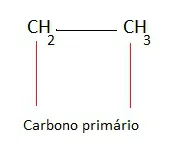

Classificação dos Carbonos
Informações e Classificações dos Carbonos de uma Cadeia.

Para Começar
Quando classificamos um átomo de carbono quanto ao número de carbonos que se ligam em uma cadeia, diferenciamo-los em carbonos primário, secundário, terciário ou quaternário
Carbono Primário
São os átomos das extremidades das cadeias e que se ligam somente a outro átomo de carbono.
Carbono Secundário
É o carbono que se liga a outros dois átomos de carbono na cadeia.
Carbono Terciário
Quando o carbono liga-se a outros três átomos de carbono.
Carbono Quaternário
Quando o carbono aparece ligado a outros quatro átomos de carbono.